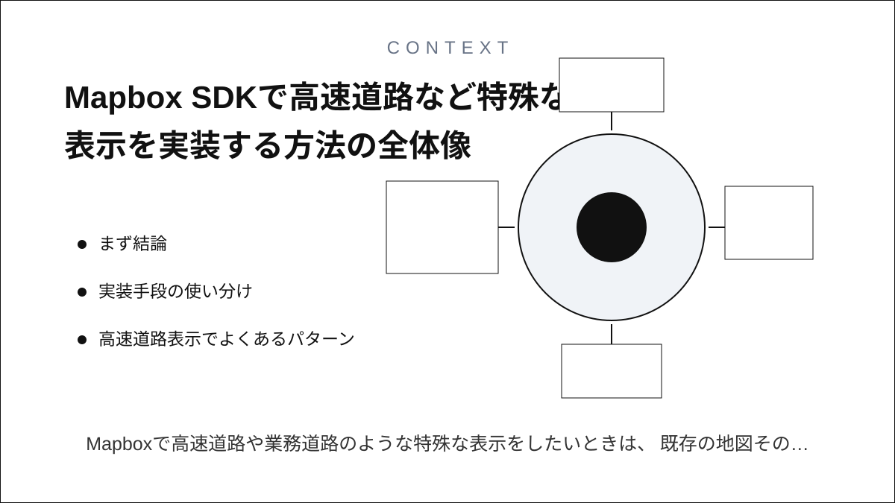
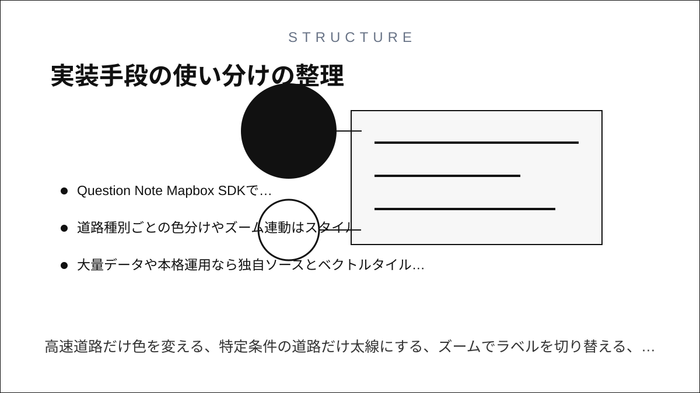
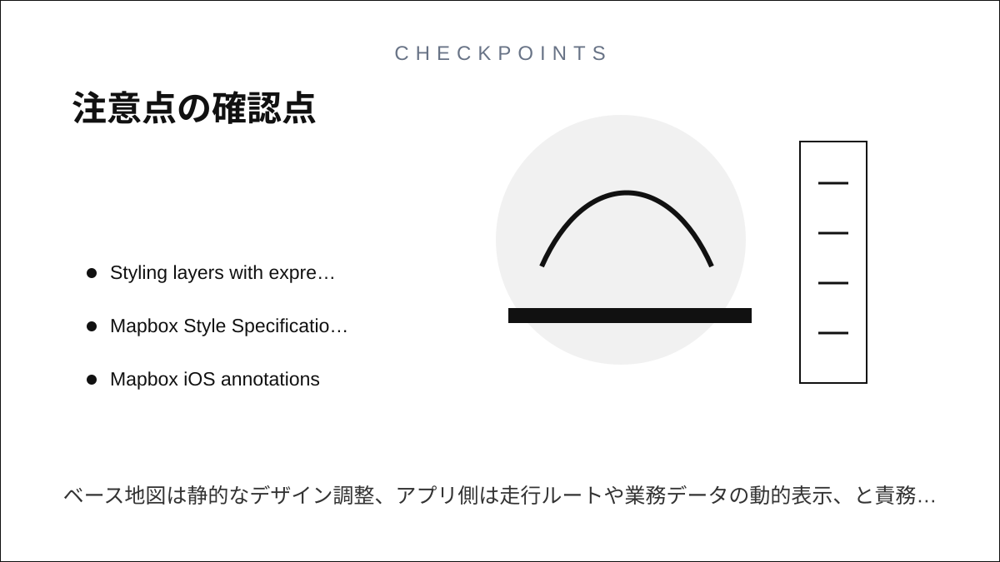

Question Note
Mapbox SDKで高速道路など特殊な表示を実装する方法


Mapboxで高速道路や業務道路のような特殊な表示をしたいときは、 既存の地図そのものを書き換えるというより、Maps SDKのスタイル機能で独自レイヤーを重ねる という考え方が基本になります。実装の中心はMaps SDKで、Mapbox Studioでベーススタイルを整え、 必要に応じてGeoJSON、ベクトルタイル、アノテーション、カスタムレイヤーを併用します。
まず結論
- 軽い強調表示ならアノテーションで足りる
- 道路種別ごとの色分けやズーム連動はスタイルレイヤーで実装する
- 大量データや本格運用なら独自ソースとベクトルタイルを使う
- 既定スタイルの限界を超える描画が必要ならカスタムレイヤーを使う
実装手段の使い分け
1. アノテーション
ピン、ライン、ポリゴンを素早く載せたいだけならアノテーションが最短です。 高速道路の走行ルート、危険地点、進入禁止ポイント、配送先などを少量表示する用途に向いています。 ただし、ベース道路の見た目全体を細かく制御する用途には向きません。
2. スタイルレイヤー
実務で一番よく使うのはここです。Mapboxのレイヤーは `line`、`symbol`、`fill` などの型を持ち、色、太さ、表示条件、ズーム条件を設定できます。 高速道路だけ色を変える、特定条件の道路だけ太線にする、ズームでラベルを切り替える、といった表現は スタイルレイヤーで作るのが本筋です。
3. 独自ソース
社内道路データ、危険物規制、車高制限、通行禁止区間のような独自情報を出したいなら、 GeoJSONやベクトルタイルをソースとして追加し、その上にレイヤーを載せます。 データ量が少なければGeoJSONで十分ですが、広域データや高頻度表示ではベクトルタイルのほうが安定します。
4. カスタムレイヤー
通常のレイヤーでは足りない独自描画が必要ならカスタムレイヤーを検討します。 たとえば、特殊な道路アニメーション、独自レンダラ、業務向けの強い視覚表現を入れたい場合です。 ただし保守負荷は上がるので、まずはスタイルレイヤーで成立するかを確認したほうがいいです。
高速道路表示でよくあるパターン
| やりたいこと | 主な手段 | 実装の考え方 |
|---|---|---|
| 高速道路だけ色を変える | スタイルレイヤー | 道路種別でフィルタして line の色と太さを変える |
| 走行中ルートを強調する | Navigation SDK または line レイヤー | ルートラインを別レイヤーで上から描く |
| 危険地点や高さ制限を表示する | GeoJSON + symbol レイヤー | 独自アイコンと属性ベース表示を使う |
| 広域の規制情報を出す | ベクトルタイル + レイヤー | 大量データ向けの構成にする |
| 特殊な見せ方をする | カスタムレイヤー | 通常レイヤーで足りない場合のみ使う |
実務上の組み方
まずMapbox Studioでベーススタイルを作り、アプリ側ではMaps SDKから独自ソースとレイヤーを追加する構成が扱いやすいです。 ベース地図は静的なデザイン調整、アプリ側は走行ルートや業務データの動的表示、と責務を分けると崩れにくくなります。
注意点
- Mapbox Standard では自前で追加したレイヤーを中心に制御する前提になる
- 大量のアノテーションは重くなるので、件数が増えたらレイヤー方式へ寄せる
- 道路表現の自由度が高い分、UI設計なしに要件を足すと見づらくなりやすい
